|
|
|
|
|
Thailand and the King's Cup
Boxing Day 2008 07 57.0N 98 26.8E Ao Chalong anchorage, Phuket
Season's Greetings to you all – we hope you had a great Christmas Day.
Like when at home, Peter’s treating today as a day of rest – just trying to catch up on a few things (like this email) and taking a break from the planning and preparation work we’ve been doing for our next big passage – the Indian Ocean.
But that’s in the future, we hope what you want to hear about is what we’ve been up to since our least email ended in Langkawi. If you remember, two friends from Penang, Peter and Simon, had sailed up with us. Peter left us in Langkawi, but Simon, the young German student from Berlin, was staying on to Phuket.
Long legs, pasta and quiet nights
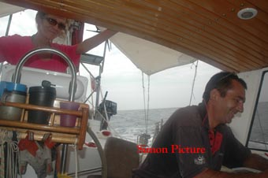 With the unexpected extra time we had spent in the Shipyard, we were already running tight to get to the King’s Cup, and Peter’s blond moment in asking Simon to put water in a diesel tank had wasted another day.
Even so, while we’d been getting used to the
fleets of fishing boats and the fish traps lurking ready to
snare your prop, the waters between Langkawi and Malaysia
have a fearful reputation as fish trap alley so we decided
to play safe and
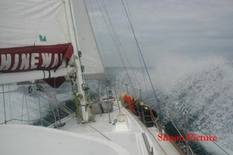
But we had a good three day run – a grand
days sailing around Langkawi to our first anchorage at
Pantai Kok. There’s a brand new marina there behind some
fairly serious 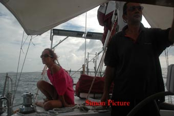
That night Simon made us his special homemade pasta dish. It’s basic pasta dough made on a cutting board, but he flattened it our and folded in layers of lightly sautéed onions and cheese. Then comes the clever bit.
He had a pan of water boiling, re-rolled out the dough on the board and with a sharp knife cut very thin slices, flicking them into the boiling water. Add a tomato salad with a slightly tart balsamic dressing, it was a magic meal.
The next two days were 12 hour motors because we had to cover 60+ miles each, but the night between anchoring off Ko Kradan was idyllic.
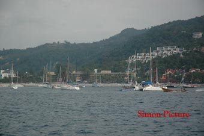 It was about 4 in the afternoon when we finally came round the southern tip of Phuket and saw Kata Bay, crammed with over 100 yachts there for the Kings Cup. We anchored just in time to have missed the skippers briefing, but in time for the opening party.
And were delighted when Simon agreed to stay with us for another week to race with us.
We pumped up the dinghy (the pump fell overboard so Simon did this magnificent flying dive to retrieve it) and while still in salt encrusted cruising clothes, we motored ashore with our glad rags and wash bags to hand. The first party was at the Kata Beach resort and we hoped they had a shower or two spare.
But when got there, they wouldn’t let us in - we weren’t yet registered for the race, but some smooth talking by Jean sorted that. Then there was confusion about a shower – they suggested one of those “beach showers” – Jean pointed out that while we wouldn’t mind getting naked outside, it might be embarrassing for their other guests. Eventually, they showed us some shower cubicles near the pool. Washed and changed, we faced the party refreshed.
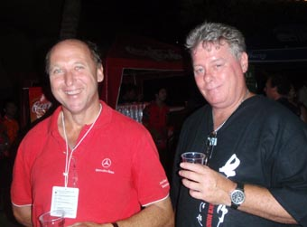 And met up with friends. Pommy, who you may remember had helped Peter sail Hinewai from Brisbane to Cairns, had come over to Phuket with his family to enjoy the Kings Cup and he joined us with his wife Mel and son, Greg. Also there was Ross Chisholm, an old mate from both Melbourne and Darwin, who was over here as one of the Race Officials.
After the party ended, Mel and Greg left, but we wandered down to the Reggae Bar, a famed establishment overlooking Kata Beach, and chewed the fat with Pommy. Jean, as usual, bumped into a few ex-pat Africans.
The Kings Cup – racing, breaking things and parties
The Kings Cup regatta, held every year to celebrate the King of Thailand’s Birthday, is probably the major regatta in SE Asia and just keeps growing. This year they had over 100 yachts competing, including some of the hottest boats in the area, split into various classes and divisions. There were 7 of us in the Ocean Rover division for what was meant to be the “live-aboards”. Maybe so, but they still took their racing seriously.
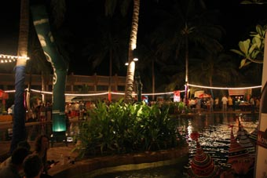 The other thing the Kings Cup is renowned for are the parties. Vast lavish affairs with more free food and grog that you can shake a stick at.
Day 1: The next day was a preparation day – for those who wanted it, there was a practice race – others like us, had formalities to sort out.
The first thing was to find the Race Committee room to register and collect all our goodies – bags, T-shirts, racing instructions etc. Plus the Big Plastic Tag to get into the parties.
Then it was down to Ao Chalong for the usual paper trail. Customs, Immigration and the Port Authority. We were initially fooled by the sign on the door “out to lunch – back 2pm” – it was 2.30 by then, but the cruising guides said Customs here are renowned for long lunches. A few other yachties arrived, we chatted – about 3pm Peter tried the door and found a Customs guy wondering where everyone was. We brought in his sign that he’d forgotten for him.
Immigration was OK, but we had to remember to sign both Jean and Simon in as passengers. If signed in as crew, you have to pay a large bond if you want to leave the country by some means rather than the boat you come in on.
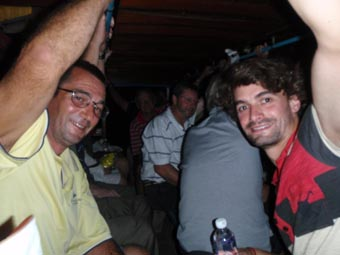 And then there was the Port Authority lady, who spent the whole time on her mobile, doing a Sybil Fawlty in Thai while pointing at the bits we had to fill in on yet another form.
Back to Kata and a bite to eat at a locale café, before changing for Party 2, which involved being loaded up in windowless multicoloured Thai busses for Kata Noi.
Day 2: There was a fleet of “longtails”, the long thin Thai boats powered by a big old Chevy block with the propeller at the end of a long pipe, running a taxi service for the fleet. So when Peter went in with the dinghy to pick up Pommy and Greg for the first days racing, we decided to leave the dinghy behind (it get’s in the way – and not even we would race towing it) and they caught a “long-tail” back. Unfortunately, in spite of having our fenders down, it caught Hinewai and left a couple of big scrapes in the paint towards the stern.
A quick division of labour – Greg and Simon working the winches, Jean helming and helping on winches, Peter sails, foredeck and helming, Pommy, mascot (not really, extra hands where needed), we headed out to the start, and were only a few minutes late crossing the line.
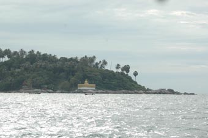 Oh, and what a day. The course wove around the islands to the south of Phuket – without doubt the most beautiful course we’ve ever raced. And challenging. No yacht can sail into the wind, most can sail 25-35 degrees off the wind – Hinewai, being big and beamy with her headsail tracks outboard, can barely handle 40-45 degrees off. It means that on those legs when we are going into the wind we have to put in a load more tacks. Simon and Greg worked their butts off.
But at times on those points of sail that Hinewai likes, we flew. We hit 8.2 knots at one point, the fastest she has ever sailed.
Sadly though, we were still DNF. We were way behind everyone else and, close to where we thought the finish was, we thought we saw a power boat picking up a black buoy, the colour of the last turning point. You only have a certain time after the first boat has finished to finish and we assumed we were outside that time so pulled out. Bugger, if we’d just gone another ½ mile, we’d have found the real mark. But even so, we had a ball.
That night was another party at Kata, but
Peter and Jean went for a walk on the beach to buy a
lantern. These are like tubular hot air balloons, standing
about 4-5ft high by 18 inches wide, made of tissue paper
over a wire frame. Closed at the top, the open bottom end
has a wax
Whilst Jean’s mum, Doreen sadly passed away in April, this day would have been Doreen’s and Arthur’s 69th wedding anniversary. The lantern was launched with Jean’s love.
Day 3: Not a good day. While getting the boat ready, we found a lot of water under the floorboards. It took a while, but we tracked the leak down to the top of the rudder stock where the gland was dripping enthusiastically.
We might have hit something or maybe it was just the pressure from the hard sailing the day before, but it needed to be fixed. That was our day’s sailing gone.
Peter repaired the gland while the others bailed the boat. Then washed it out with fresh water.
That night, Jean and Simon went off to the next party, this time at Karon Beach, meeting up with Pommy and trying a few local bars later on where Pommy made a new friend. Peter stayed behind at Kata, getting the last email finished off and sent, sadly needing to sit right next to the bar to power the laptop. (Hic!)
Day 4: Today was a bounce day. Neither of us were feeling top notch, not so much due to the night before, but as much as a run-down moment from the last couple of hard few months. Jean was especially under the weather (we later found out a fair few yachties had food poisoning from the fish dishes the previous night).
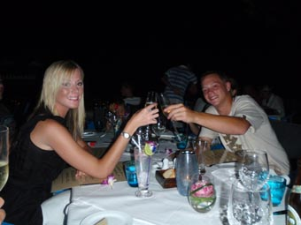 We decided on a day of rest, especially since we were due to be meeting up with Pommy and his family that night to celebrate the 22nd birthday of Greg and Catherine (his twin sister).
Suitably refreshed, we wandered ashore than night and met up with the family before moving onto a right posh restaurant. Seriously large quantities of food and wine were consumed with everyone having a ball. Our contribution to the evening was enough of the hot air lanterns so that everyone had a chance to launch their own that night on the beach. Then back to the restaurant for coffee and a few Zambuccas. Thanks Pommy, it was a wonderful night.
Day 5: Up early “hot to race”, we found we were trapped. A plonk of a Thai charter ketch, Meroja, had anchored so close to us that they were sitting directly over our anchor chain – so we couldn’t get off. There was no-one on board so we were stuck until they turned up at 9.45. Jean wandered up to the bow and had a few choice comments to make to them – sheepishly they lifted their hook and moved off, probably to cause someone else grief. We headed for the start.
The most annoying thing wasn’t the fact we were an hour late for the start (after all that’s not too bad for us), but that we had missed the formal “Sail Past” off all the yachts past a Thai Frigate. Aboard was a representative of the Kings, and the Sail Past was to honour the King’s birthday that day.
So we motored up to the start-line, hoisting the sails and stopping the engine just as we got there (Yes, all you purists, technically we should he been disqualified, but I think everyone had a bit of a soft spot for us by then – they’d all been listening to our frantic calls on the radio trying to track down the owners of the Thai ketch blocking us in).
We tried valiantly, but with the wind dropping out on the last long upwind-leg, realised we’d be late for the party and dropped out. A couple from the committee boat up at the upwind mark thanked us that night – they were dreading how long they were going to have to wait while we got there.
And, yes, another party that night.
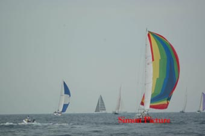 Day 6: Up early again and joy, we got away with heaps of time to spare, even Pommy was on time. And had one of our best starts, only five minutes late. We stonked around the course, having great fun as we dropped further and further back.
BUT WE FINISHED! Albeit 34 minutes behind
the next slowest boat in our division. With the heady
furled in and the motor started, we decided to amuse the
committee boat at the finish line and motored past with
“Ride of the Valkaries”
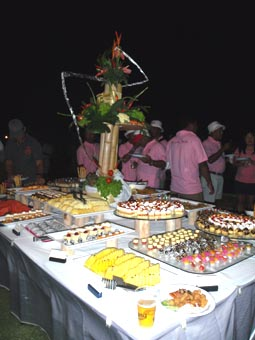
That evening was the final prize giving, hosted by a representative of His Majesty, who was real sweetie. Then the final party and it was huge. The usual tables groaning with food and free drinks, but also great rhythms being blasted out by the Kilmanjar Band – from Africa! Who noticed the rain – or that the wind and swell was building.
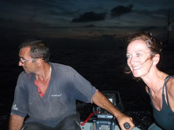 The only thing that spoilt it was that the dinghy got flipped in the surf as we left and we later discovered the dry bag with the camera in it had a big tear – scratch one digital SLR.
A few days in RPM, but no India
With the racing finished, it was time for
Simon to carry on with his travels but rather than try and
get him and his backpack ashore in what was still pretty
large surf, we decided to play safe and headed round to
Royal Phuket Marina. To get in there, you
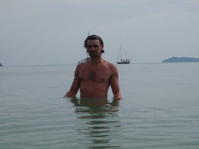
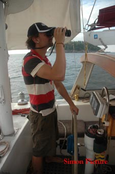 Fortunately, the marina sent a little boat to guide us in – even though the channel is marked, it’s pretty nerve racking.
That night we wandered round to the Boat Lagoon, another marina next to RPM and had a “farewell Simon” dinner in a little Italian restaurant that had been well recommended. And it was great – a Western food fix.
It was strange, and sad, to say goodbye to Simon the next morning. We wish him well on his travels.
We the spent a couple of days at RPM, mainly starting the preparation work for the big Indian Ocean crossing – arranging the engine service, the haul-out to fit the folding prop, sending the camera off to Bangkok to see it was repairable (sadly not). We also tried to sort out visas for India, but post Mumbai, it has got silly. You have to have either confirmed PAID booking in a hotel or marina. Well, we only really wanted the visa so that we could stop off in the Andaman Islands – in the end, it all got too hard and like a number of other boats, have given India away as a possible destination.
And then the best week yet
Leaving RPM started our best week yet since
leaving home. We had time to just wander around Phang Nga
Bay, not having to be anywhere by a certain time, just going
and stopping where we felt like it. Phang Nga is the
classic Thai island region, the towering limestone cliffs,
the caves, the Hongs (enclosed bays, often only reachable
via the caves) and, of course, Ko Pin Yan, better known as
“James Bond Island”, Scaramanga’s home in “The Man with the
Golden Gun”. 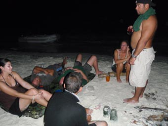
We started off popping over to Ko Phi Phi Don
where we met up for the night with Tris & Jas of Eloise
and Tom of Optimum Trust. Phi Phi got hammered by
the tsunami with many dead, but you wouldn’t know it now -
it’s back to
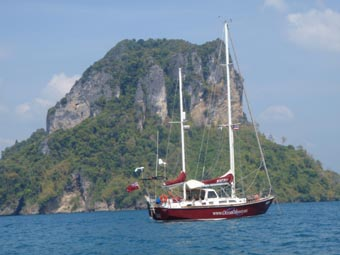
The next morning, we headed north, island
hopping up to the Ko Dam group for lunch.
The next morning, we headed on north, originally planning to tuck behind Ko Chong that evening, but found the area to be teaming with fishing boats and more fish traps than we had ever seen. So we turned left and popped over to Ko Hong (North). This has one of the biggest Hongs, or enclosed bays, with a natty little tunnel to reach it (or a great big open entrance on the other side). When we arrived it was teaming with tour boats, dropping their passengers off to sea-kayak into the caves. We just sat and waited till they had gone and then had the place to ourselves, although couldn’t get into the tunnel due to the tide.
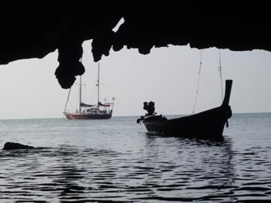
The next morning, the tide was OK so of we
went – and it was so beautiful. We motored over then
paddled in; disturbing a fisherman lazing around is his very
small tatty longtail. You paddle in, expecting to reach the
main Hong, only to find a small Hong first – just a circle
of sheer cliffs rising several hundred feet above you,
totally enclosing the 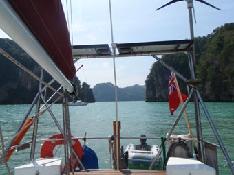
All too soon, the first tour boat arrived, so
we upped anchor and headed north for Ko Pan Yi, known as the
“Sea Gypsy Fishing Village” – another real tourist trap
around lunchtime, but deserted after that. It was only a
short trip so we made it for lunch, 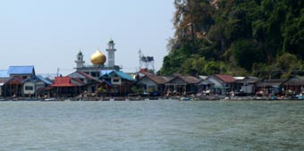 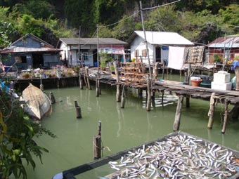
Mid afternoon, we motored back to Hinewai
planning to head on, but one of the longtails came over and
offered us a trip around the mangroves – at a seriously
cheap rate compared 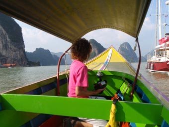
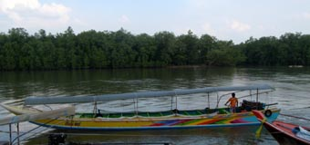 At first, we dithered, but then thought, why not. And are so glad we did. We went miles, right up to the town of Phang Nga (he needed fuel) then back past some of the most spectacular scenery we’d seen so far. The highlight was a vast 100 yard long cave straight though a cliff joining two rivers.
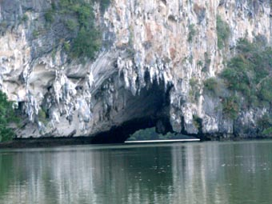 Like many of the cliff faces in this area, it seemed almost organic. The rock is limestone and over the years, the rain has dissolved it away, but then redeposited it as vast flowing stalactites down the cliff faces. The rock looks like molten plastic, flowing down to the water.
It was getting dark by the time we got back to Hinewai so decided to stay the night. We ate dinner looking across the village, so peaceful but sadly knowing what a tourist trap it would turn into in a few hours time.
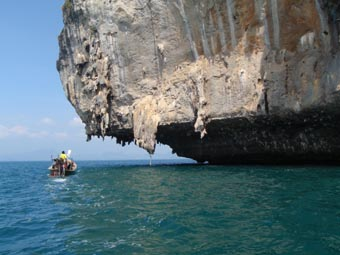 The plan the next day was to head to Ko Pin Yan, or James Bond Island, but as we approached we changed our minds. It’s very shallow near by, so you have to anchor a way south and take a mile long dinghy ride across a channel to get there. Not only was it pretty windy and very choppy in the channel, but we could see the island was teeming with long-tails and tour boats. We headed south, back past Ko Hong down to the big bay of Ao Labu on Ko Yao Yai. It was so peaceful and we pretty much had the place to ourselves – so we took a nice extra recharge day there.
Christmas – various countries
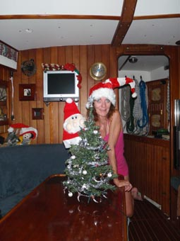 As grand as the last few days had been, we had to head on. We’d decided that it would be special if Jean were to head back to Australia to spend Christmas with her Dad so needed to get back to civilization. That had the name of Ao Chalong, a sort of 2nd port for Phuket, and where we’d arranged to meet up with Tris, Jas and Tom again.
A couple of days later, Jean and Peter headed up to the airport and dropped Jean off for her flight back to Perth while Peter headed on to do some organising for the New Year and to get some bits for the boat.
1. Thailand
That afternoon, he took the boat back to Kata,
where we’d stayed for the Kings Cup, spending a great
evening visiting old haunts, getting a hair cut and hitting
a bookshop. The next day was spent lying around reading
before he headed back to Ao Chalong for Xmas Eve. 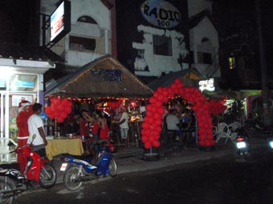
And it was a Hooley, spent with the old crowd and a few other yachties and ex-pats at the “Come On” bar – run by Peter Jacks, a grand old South (sorry, Sarf) Londoner. The drinks were at Happy Hour prices all night and the food was free – it was an interesting motor back to Hinewai in the wee small hours.
Christmas day dawned with Tris calling on Channel 14 – would Peter come and help shop for that evening BBQ. We met up on the pier and leap aboard Tris’ moped for – Tesco’s! With Tris’ back-pack full, hanging on to the back of the moped would be precarious so Peter took the option of a 30 minute stroll back – and discovered a firework shop! He imbibed, buying a few rockets and other bangy-flashy things.
The BBQ that night was to be at a ne w friends house – Sally, an ex-pat South African who now lives in Phuket. She was working Christmas Day but Tris had the keys to her house and was already preparing the food when Peter got back. He took one look at the fireworks and demanded to know where they came from. Peter took him – and it was like a kid in a candy shop – he bought enough to start a small war.
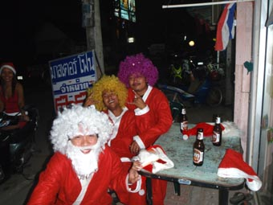 Back at the house, people were arriving and then we all popped out to Tom’s boat for early evening cocktails – Peter headed back to Hinewai to grab a couple of things and then lost Tom’s boat totally, spending over half an hour cruising around in the dark going “I know it’s here somewhere”. By the time he found it, thanks to the red flashing lights on a couple of Christmas Hats, everyone was getting ready to head back to Sally’s.
The BBQ proceeded apace, with Sally making great use of her present from Tris & Jas – a blender. Her cocktails can put hair on your chest. A number of other friends turned up and after the meal, we all headed down to the pier where Peter and Tris put on an impromptu firework display. We were both like kids again.
Plans had been to all head down to Phi Phi for New Year, but Peter decided to wait for Jean in Ao Chalong. It was the chance to catch up loads of odd jobs on the boat, to start this email and to get the website up to date. At last the background has now been changed from shots of Sweetwater to shots of Hinewai.
2. Western Australia
After a fairly comfortable 10 hour trip with Tiger Airways, via Singapore, Jean touched down in Perth at 10pm, cleared Immigration/Customs and leapt into a cab. She hadn’t told any of the family that she was coming over so naturally no-one to meet her to help with all the ‘katunda’ [baggage] that she was humping back to Oz – not much in the way of clothing, mostly books and charts not needed on the boat anymore.
Lugging the luggage and dumping it by the front door of her Dad’s place, she crept around to the side of the house and tapped lightly on his bedroom window, assuming the voice of one of her nieces – “Granddad, granddad.” The bedside light flicked on, “Yes, what is it, what is it?” “It’s Mary-Liz, sorry but I’ve lost my key.” [A completely irrelevant comment to make at 11pm outside his window!] “Ok, I’m coming.”
A few moments later, Arthur finally unbolted and opened the door, blinking in the harshness of the security light, taking a second or two to realize that in fact it was Jean standing there. Staggering back a couple of steps with his hands over his mouth in disbelief, to say he was overwhelmed would be a huge understatement. They sat up chatting until well after 2am – so much to catch up on.
Phone calls to her brothers Chris and Rob the next morning elicited very similar responses.
The week flew by all too quickly and was a very special one spent with the family and of course good to snuggle up with the big ginger cat, Bugner, who at first ignored Jean completely. Loads of good food consumed, oh how she has been missing her daily salad fix, and decent red wine to drink. She certainly needs some fattening up and the week was a good start.
Between the Christmas/Boxing Day festivities, there was the inevitable ‘things to buy for the boat’ list. Not all that easy given the actual shopping days available, but nearly everything was achieved, plus a few ‘extras’, and purchases either crammed into the bag for the hold up to the maximum allowable weight, or squeezed into the hand luggage – only one bag per passenger. Jean thought she was in the clear when checking in only to discover that once one ventures through the International Departure gate, hidden round the corner is an Airport Security person, policing the number and weight of hand luggage. A heart-stopping moment as she had her day-pack plus her new medium sized hard camera case and some of the passengers ahead were being made to return to the check-in counters. “What’s in that case?” he demanded. “Just my new camera, sir.” Fortunately she was waved through!
3. Together in Thailand
Jean got back around lunchtime on the 30th, exhausted after nearly 16 hours of budget airline travel, including 7hours stuck in the budget terminal in Singapore. She slept the rest of the day, awakening bright and breezy the following morning, so we decided to head back to Kata Beach for New Years Eve.
Nai Harn, Kata, Karon and Patong are all bays on the south west of Phuket. Nai Harn is where many yachts spend Christmas and we’d considered stopping there, but it was so crowded. Many of the yachts leave for New Year’s Eve, either heading for Kata or Patong for the fireworks. That night was pretty blowy from the NW and most yachts gave Kata a miss, heading on for the more sheltered Patong. But Patong is a real tourist hole, pretty down market, and didn’t appeal to us, so we ducked into Kata.
There was quite a choppy swell running. We’d been passed a little while before by a long-tail crashing through the waves – Peter’s comment was “there’s a group of wet and scared tourists” – and a we came round the point we spotted the long-tail, stationary with the driver working desperately on the engine as it drifted down towards some rocks, with spectacular spray all over them as the waves broke.
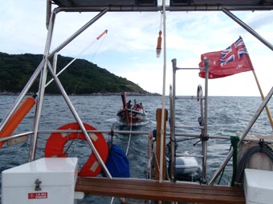 Jean steered us down towards them as Peter prepared a line in case. Not surprisingly, the long-tail driver gratefully accepted our offer of a tow so Peter threw the line across and he made it fast. Jean then gently drove us away from shore - To the great relief of the tourists, young, old and little kids – and for Peter – the long-tail would have no more than 20ft from the rocks, we were maybe 5 feet more – although still in 20 feet depth of water, it was way too close for comfort.
About 10 minutes later, another long-tail comes over to help so we slipped the tow. We were surprised to see our long-tail zooming along a few minutes later – we reckon he’d just run out of fuel and got a top up from the other long-tail.
With many yacht’s giving Kata a miss, it was pretty empty so we were able to get in close with reasonable shelter – albeit still pretty rolly (listening to other yachts chatting on the radio, it seems Patong was no better that night).
While heaving with people, at first Kata was
quite civilized. We had a quick drink
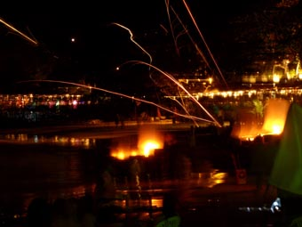
Mainly due to all these big Western kids (30 – 50 year olds) and fireworks, which were being hawked left, right and centre – at prices 5 times and more what Tris and Peter had paid a few days before. Everywhere you looked, there were fireworks being let off – everything from sparklers to handheld Roman Candles to pretty serious mortars. How no-one was hurt…..
About 11.30, we said our goodbyes and headed back to Hinewai, ready for midnight – and the main firework display. The sky was still full of the hot-air lanterns we’d played with Pommy and his family, but this time there were hundreds up there.
We noticed most of the yachties anchored in the bay had also returned to their boats, afloat is THE place to watch the display.
As midnight came, and Auld Lang Syne blared out from the i-pod, the main fireworks started. A dozen different displays from all the resorts down the bay, and either side of the bay, light up the sky for more than 20 minutes – and they are all vying to be the best. Combined, it was the best display either of us has ever seen – including Sydney.
After a leisurely start to New Year’s Day, we upped the anchor and moved back to Ko Ranga Yai where we’ve been for the last 24 hours now. We’ll be moving into RPM again tomorrow and our crew, two young(ish) Germans, Martin and Wenda, who have just, co-incidentally, finished their PhD’s in Melbourne, are joining us in a couple of days so we’ve spent the day tidying the boat – and making room for them and their backpacks.
And, getting the chance to finish this email – at last you are as up to date as we are.
It may go quiet for a bit again
We’re now facing our longest passage to date – across the Indian Ocean and up the Red Sea to the Med. Since leaving Melbourne, we’ve travelled some 7,600 nautical miles (c. 12,000kms) – this next passage is just short of 5,000nm and will take us until April.
So during the next week, we’ll be going over Hinewai with a fine toothcomb, checking everything, re-stowing everything back to passage rather than frolic around the islands mode, getting the engine serviced, fitting our folding prop, provisioning etc etc.
Once we’ve signed out of Thailand, we’ll head back south to Langkawi first. Partly as a be- in trip for Martin and Wenda, but also to get some of the stuff we can’t get in Thailand – and, of course, Langkawi is a duty free island and there’s no off-licenses or bottle shops between here and Cyprus.
Then it will be “Head West”, firstly to Uligan in the Thiladhunmathee Atoll of the Maldives (although Galle in Sri Lanka may be a possibility as well), then onto Oman and the Red Sea.
And we doubt there’ll be much internet access en route, so these weighty tomes may dry up for a bit. But rest assured, it’ll seem like no time before your in-box is groaning once again.
Until then, may we wish you all a very Happy and, in these interesting times, a prosperous New Year.
Hugs
Peter & Jean
PS While we may not be sending emails, you can still track our position through the weather reports we'll be sending. Simply log onto http://www.pangolin.co.nz/yotreps/tracker.php?ident=VKV6637.
Next Log Page: The big crossing - the Indian Ocean and an unexpected stop in Galle
|
|
|
|
|
|
|
|
The Crew The Route The Yacht The Log Guestbook Links Contact Us |
|
|
|
|
|
Home |
|
|
All Original Content of this Web Site Copyright © 2000, 2001, 2002, 2003, 2004, 2005, 2006, 2007, 2008, 2009 Ocean Odyssey Pty Ltd |

 coated
circle of fabric held on a cross frame. When lit, this
burns and puts hot air into the lantern, which after a while
flies off into night, illuminated by the burner.
coated
circle of fabric held on a cross frame. When lit, this
burns and puts hot air into the lantern, which after a while
flies off into night, illuminated by the burner.

 We leapt in the
dinghy to go snorkeling on that reef, but it was such a
disappointment after Phi Phi – basically dead coral (tsunami
again). So we ended up pootling around Ko Dam Hok in the
dinghy, being blown away by the cliffs and scenery. Later
we headed on to Ko Hong (South) where we had decided to stop
for the night. Again, we leapt into the dinghy, going
ashore and finding a monument to those who lost their lives
4 years before. It was a strange feeling seeing the marker
for how high the water came, straight through a camp-site.
We leapt in the
dinghy to go snorkeling on that reef, but it was such a
disappointment after Phi Phi – basically dead coral (tsunami
again). So we ended up pootling around Ko Dam Hok in the
dinghy, being blown away by the cliffs and scenery. Later
we headed on to Ko Hong (South) where we had decided to stop
for the night. Again, we leapt into the dinghy, going
ashore and finding a monument to those who lost their lives
4 years before. It was a strange feeling seeing the marker
for how high the water came, straight through a camp-site.